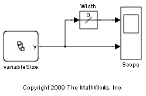
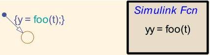
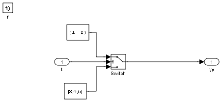
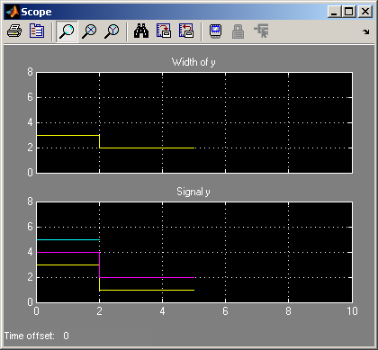

Using Variable-size Data
This demo showcases a simple use of variable-size data in Stateflow charts. Starting from R2010a, variable-size data can be passed as inputs and outputs to and from Embedded MATLAB functions, Embedded MATLAB truth-tables, and Simulink Functions in a Stateflow chart.
 The chart variableSize defines a Simulink function foo that returns a matrix of varying dimensions, based on the simulation time.
Note that the variable-size output of the Simulink function is assigned to the chart output at each time step. On simulation, the chart consequently outputs a matrix of varying size.
